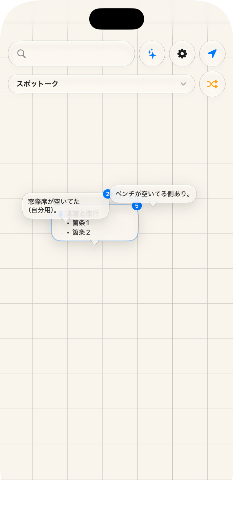
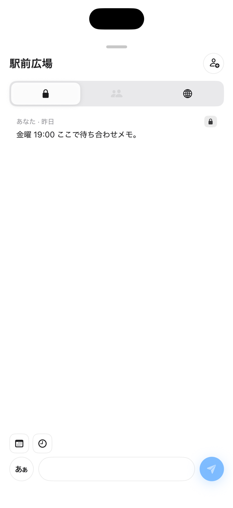
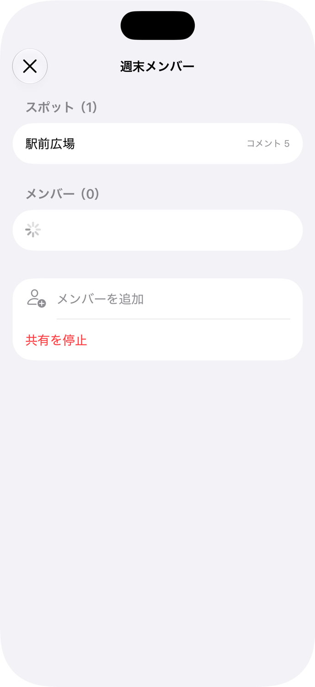

地図でスポットを見る
地図上のピンとコメント数チップから、周囲のスポットとコメントの吹き出しをひと目で確認できます。

Spotalk Map — 地図の上に、その場所の声を残す。
About
スポットーク（Spotalk Map）は、地図上のスポット（場所）にコメントを残し合える、駅の伝言板のようなアプリです。 気づいたこと・待ち合わせメモ・その場所の様子を、ピンに紐づけて短く書き留められます。
投稿の公開範囲は非公開・グループ・公開の3段階から選べます（既定は非公開）。グループ機能を使えば、気の合う仲間だけでスポットやコメントを共有することもできます。
How to use
地図でスポットを見る
地図上のピンとコメント数チップから、周囲のスポットとコメントの吹き出しをひと目で確認できます。

コメントを読む・書く
選んだスポットのコメント一覧を表示し、非公開・グループ・公開を切り替えながら書き込めます。

グループで共有する
スポットをグループに追加し、メンバーを招待して仲間内だけでコメントを共有できます。

Features
Pricing
本アプリは無料でご利用いただけます。Google AdMob による広告（非パーソナライズ配信・バナーのみ）を表示します。パーソナライズ広告のための識別子は収集しません。
※ 現時点でアプリ内購入（IAP）は実装していません。